CC(=O)c1c(O)cc(O)cc1O16 个编号结构、11 个制备事件、3 条目标路径。正文 Scheme 1/2 与 SI 制备网络已覆盖；E04 为两阶段制备，未报告的内部中间体不补写 SMILES。全部结构使用 canonical isomeric SMILES，仍待独立专家复核。
完整 JSON · 逐步 CSV · 路线序列 · SDF · HRMS 核对
| 事件 | 分子连接 | 报告产率 | Canonical reaction SMILES |
|---|---|---|---|
| E01 | 7 → 8 | 8: 72.3% | CC(=O)c1c(O)cc(O)cc1O>>COCOc1cc(O)c(C(C)=O)c(OCOC)c1 |
| E02 | 8 + 9 → 10 | 10: 77% | CC(C)=CCBr.COCOc1cc(O)c(C(C)=O)c(OCOC)c1>>COCOc1cc(OCC=C(C)C)c(C(C)=O)c(OCOC)c1 |
| E03 | 10 → 6 | 6: 70% | COCOc1cc(OCC=C(C)C)c(C(C)=O)c(OCOC)c1>>COCOc1cc(O)c(C(C)=O)c(OCOC)c1CC=C(C)C |
| E04 | 6 + 11 → 12 | 12: 77.5% | COC(OC)N(C)C.COCOc1cc(O)c(C(C)=O)c(OCOC)c1CC=C(C)C>>COCOc1cc2occ(I)c(=O)c2c(OCOC)c1CC=C(C)C |
| E05 | 12 → 5 | 5: 83% | COCOc1cc2occ(I)c(=O)c2c(OCOC)c1CC=C(C)C>>CC(C)=CCc1c(O)cc2occ(I)c(=O)c2c1O |
| E06 | 5 + 13 → 3 | 3: 73.4% | CC(C)=CCc1c(O)cc2occ(I)c(=O)c2c1O.c1nnc[nH]1>>CC(C)=CCc1c(O)cc2oc(-n3cncn3)cc(=O)c2c1O |
| E07 | 3 + 14 → 1 | 1: 45% | CC(C)=CCc1c(O)cc2oc(-n3cncn3)cc(=O)c2c1O.COc1ccc(O)cc1>>COc1ccc(Oc2cc(=O)c3c(O)c(CC=C(C)C)c(O)cc3o2)cc1 |
| E08 | 5 → 4 | 4: 47% | CC(C)=CCc1c(O)cc2occ(I)c(=O)c2c1O>>CC1(C)C=Cc2c(cc3occ(I)c(=O)c3c2O)O1 |
| E09 | 4 + 13 → 15 | 15: 70% | CC1(C)C=Cc2c(cc3occ(I)c(=O)c3c2O)O1.c1nnc[nH]1>>CC1(C)C=Cc2c(cc3oc(-n4cncn4)cc(=O)c3c2O)O1 |
| E10 | 3 → 15 | 15: 49% | CC(C)=CCc1c(O)cc2oc(-n3cncn3)cc(=O)c2c1O>>CC1(C)C=Cc2c(cc3oc(-n4cncn4)cc(=O)c3c2O)O1 |
| E11 | 15 + 16 → 2 | 2: 44% | CC1(C)C=Cc2c(cc3oc(-n4cncn4)cc(=O)c3c2O)O1.Oc1ccc(O)cc1>>CC1(C)C=Cc2c(cc3oc(Oc4ccc(O)cc4)cc(=O)c3c2O)O1 |
CC(=O)c1c(O)cc(O)cc1O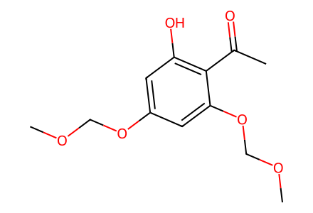
COCOc1cc(O)c(C(C)=O)c(OCOC)c1
CC(C)=CCBr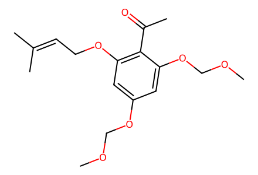
COCOc1cc(OCC=C(C)C)c(C(C)=O)c(OCOC)c1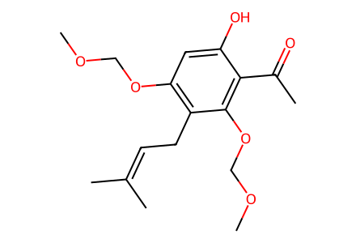
COCOc1cc(O)c(C(C)=O)c(OCOC)c1CC=C(C)C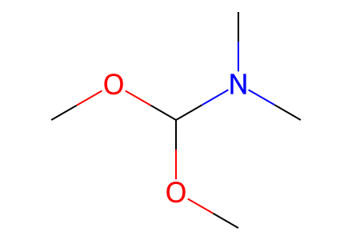
COC(OC)N(C)C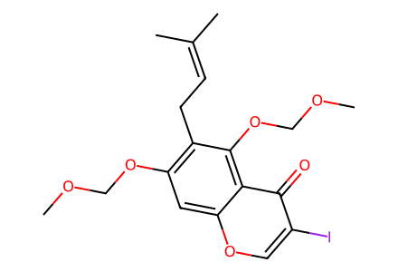
COCOc1cc2occ(I)c(=O)c2c(OCOC)c1CC=C(C)C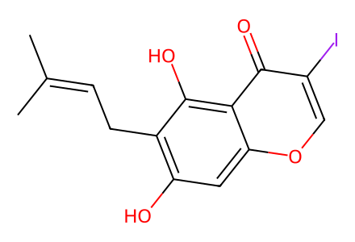
CC(C)=CCc1c(O)cc2occ(I)c(=O)c2c1O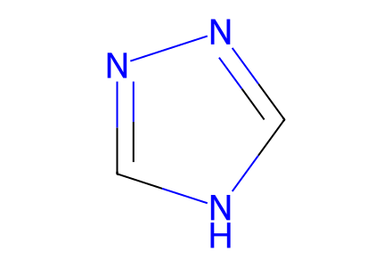
c1nnc[nH]1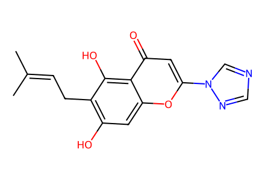
CC(C)=CCc1c(O)cc2oc(-n3cncn3)cc(=O)c2c1O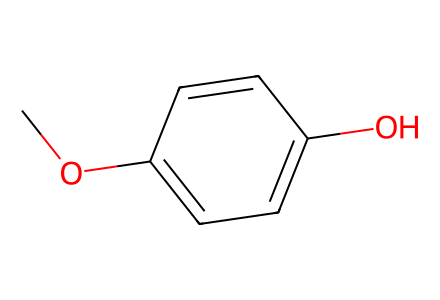
COc1ccc(O)cc1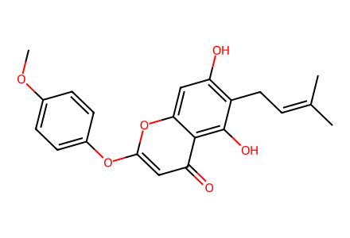
COc1ccc(Oc2cc(=O)c3c(O)c(CC=C(C)C)c(O)cc3o2)cc1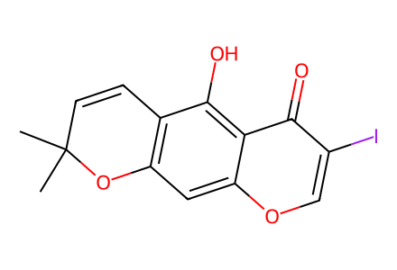
CC1(C)C=Cc2c(cc3occ(I)c(=O)c3c2O)O1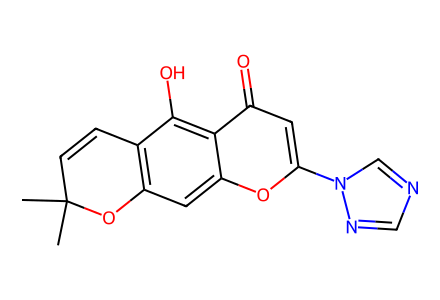
CC1(C)C=Cc2c(cc3oc(-n4cncn4)cc(=O)c3c2O)O1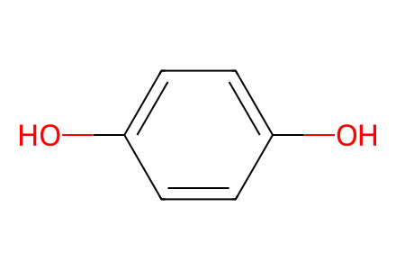
Oc1ccc(O)cc1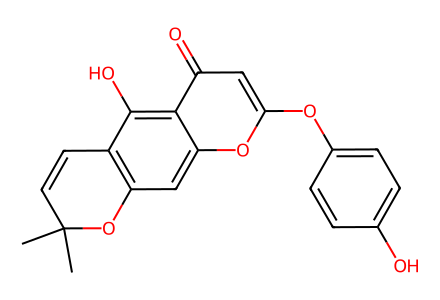
CC1(C)C=Cc2c(cc3oc(Oc4ccc(O)cc4)cc(=O)c3c2O)O1